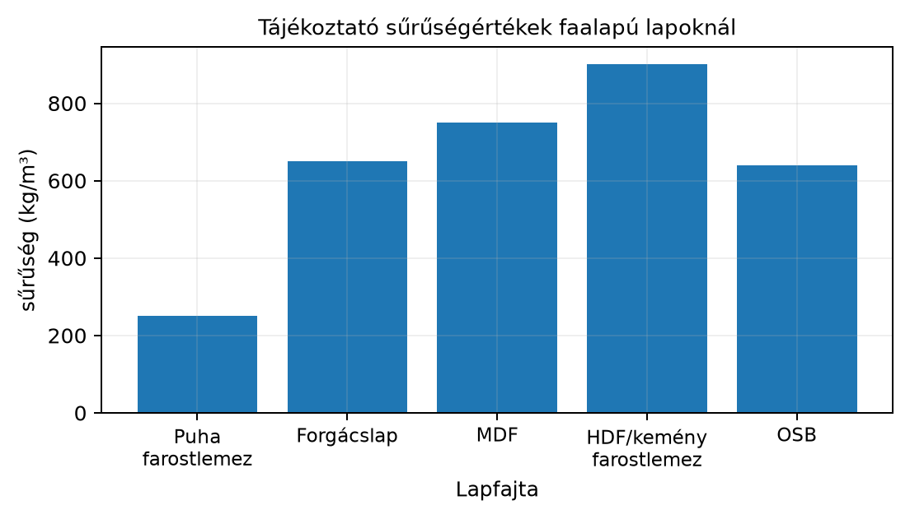

Konyhabútort, beépített szekrényt, polcot, mart frontot vagy nedves helyiségbe szánt bútort készítesz. A megrendelő azt kérdezi: miért kerül annyiba a „bútorlap”, és miért nem elég a sima forgácslap? A lapválasztáson múlik, hogy a szekrény nem dől össze a csavaroknál, az él nem törik ki a fűrész alatt, a front nem vetemedik el, és a beltéri levegőben nem lesz zavaró formaldehid-szag. Ebben az alfejezetben az agglomerált faalapú lapokat és felületbevonatos változataikat ismered meg.
Képzelj el egy 18 mm vastag, fehér melaminbevonatú oldallapot. Ha szétfűrészeled és megnézed az élét, három zónát látsz:
Ez a rétegezett szerkezet adja a forgácslap olcsóságát és síkbeli mérettartását. Egy MDF lap belseje ezzel szemben teljesen homogén, apró farostokból áll, mint egy sűrű kartonlap, ezért jól marható. Egy OSB lapon nagy, lapos forgácsdarabok látszanak, rétegenként merőleges irányban, mint a síkban összetapadt műszakilag orientált gyaluforgács.
Definíció. Agglomerált faalapú lap: faanyagrészecskékből – forgácsból, rostból, szálból – ragasztóanyaggal, hővel és nyomással táblásított lap, amelynek tulajdonságai a gyártás során beállíthatók, és a tömör fával szemben kevésbé mozog nedvességváltozásra. A magyar műhelynyelvben gyakran „bútorlap”, „forgácslap”, „MDF” néven emlegetik, de szakmailag érdemes pontosan elkülöníteni őket.
Definíció. Forgácslap: faforgácsból és műgyantából (jellemzően karbamid-formaldehid, melamin-karbamid-formaldehid vagy poliuretán ragasztóval) préselt lap. A legtöbb bútoripari forgácslap többrétegű: külső rétege finomabb, a közép durvább. A P-osztályok a felhasználási területet jelölik (P1–P7), például P1 általános száraz, P2 bútoripari száraz, P3 nedvességálló belső, P5 teherbíró nedves környezetbe. (A pontos osztályok és jelek az aktuális szabvány szerint ellenőrizendők.)
Definíció. MDF (medium density fibreboard): közepes sűrűségű farostlemez, apró farostokból, száraz eljárással ragasztva. HDF (high density fibreboard): nagy sűrűségű farostlemez, keményebb, jobb csavartartással. A kemény farostlemez hagyományos, nagy sűrűségű farostlemez, gyakran az egyik oldalán sima, a másik oldalán rácsmintás, és vékony (2,5–6 mm) hátfalnak, fiókfenéknek használják. A puha, szigetelő farostlemez nem bútoripari szerkezeti anyag, legfeljebb párnázó vagy csomagolóréteg.
Definíció. OSB (oriented strand board): hosszú, keskeny lapos forgácsdarabokból, rétegenként merőleges orientálással ragasztott lap. Az OSB/1–OSB/4 osztályok a nedvességállóságot és teherbírást jelölik; az OSB/3 teherhordó célra párás környezetben (de nem tartósan nedves, kültéri helyen) használható, ezért általánosan elterjedt építőipari lap. (A pontos osztályok az MSZ EN 300 szerint ellenőrizendők.)
Szabvány. A faalapú lapokra vonatkozó fontos magyar/európai szabványcsaládok, a konkrét számok ellenőrizendők:
A lapok forgalmazásakor gyakori jelölések:
Az alábbi diagram a tájékoztató sűrűségtartományokat hasonlítja össze. A sűrűség befolyásolja a tömeget, a csavartartást, a marhatóságot és a szerszámkopást.

A forgácslap a bútoripar legnagyobb mennyiségben használt alapanyaga. Előnye az alacsony ár, a nagy táblaméret, a jó síkbeli mérettartás. Hátránya, hogy a csavarokat rosszul tartja, éle porózus, és a csavarlyukak könnyen „kiégnek”. A P2 bútoripari forgácslap száraz belsőtérbe való; a P3 nedvességálló változat konyhába, fürdőszobába is beépíthető, de nem szabad tartósan folyóvíznek kitenni. A forgácslap felületét általában melaminpapírral vagy furnérral borítják; a csupasz lapot beltérben ritkán használják.
Az MDF homogén anyaga jól marható, ezért mart, profilált frontok, ajtóbetétek, íves alkatrészek alapanyaga. A fűrészelt él simább, mint a forgácslapé, de az élet itt is élzárni kell. A HDF sűrűbb, keményebb, vékonyabb változatban laminált padló alapja, vastagabb változatban nagyobb mechanikai igénybevételű elemek alapja lehet. A kemény farostlemez vékony, olcsó hátfal, fiókfenék, képkeret-hátlap anyaga.
Az OSB elsősorban építőipari lap, de falburkolat, térelválasztó, beépített bútor szerkezeti háttéranyag is lehet, ha a felületét borítjuk. A sík lapban a rétegek miatt jó a teherbírása. A bútoriparban elterjedtebb az OSB/3, mert jobban tűri a nedvesség-ingadozást. A nyers OSB felülete érdes, forgácsos, ezért bútorlappá csak lakkréteg vagy más bevonat után válik.
Definíció. Melaminbevonatú lap (a műhelygyakorlatban gyakran „laminált bútorlap”, „melaminlap”, „dekorfóliás lap”): a nyers forgácslapra vagy MDF-re, hővel és nyomással rápréselt, melamingyantával impregnált dekorpapír. A hátoldalra általában egy gyengébb kiegyenlítő papírréteg kerül, hogy a lap ne görbüljön. A felület zárt, könnyen tisztítható, de a felső papírréteg vékony, ezért bizonyos karcokra és erős kopásra érzékenyebb, mint a HPL.
Definíció. HPL (high pressure laminate): nagy nyomáson, nagy hőmérsékleten rétegekből préselt dekorréteg, amelyet utólag ragasztanak a hordozólapra. A HPL kemény, kopásálló, hő- és vegyszerálló, ezért konyhai munkalapok, laborszerű felületek, komoly igénybevételű bútorok borítására való. A CPL (continuous pressure laminate) folyamatos eljárással készül, vékonyabb, hajlíthatóbb, ezért görbe felületek borítására is használható.
Lakkozott lap: MDF vagy HDF alapra felhordott poliuretán (PU), UV-lakk vagy más lakkrendszer. A konyhai, fürdőszobai matt vagy magasfényű frontok nagy része ilyen. A felület színhelyes, zárt, de karcra és ütésre érzékenyebb, mint a HPL.
Furnérozott lap: a hordozólapra természetes furnért ragasztanak, így tömörfa megjelenést kapunk olcsóbb, síkban stabilabb alapon. Az ilyen lapok felületkezelését később a Furnér szabása, illesztése és táblásítása; furnérteríték és a Lapok furnérozása, préselés utáni műveletek, hibák és íves felületek borítása alfejezetek tárgyalják.
Figyelem. A hagyományos forgácslap- és MDF-gyártás egy része formaldehid-tartalmú műgyantát használ. A formaldehid szaga ingerli a szemet és a légutakat, magas koncentrációja egészségkárosító. Ezért a beltéri bútorokhoz csak alacsony kibocsátású lapot válasszunk.
A régi, ma már gyakran visszavont vagy korlátozott E2 osztályt ne használd beltérre. A jelenlegi európai piacon az E1 osztály a legelterjedtebb, de léteznek szigorúbb jelölések is (például E0,5, E0, japán F-besorolás, CARB P2). A pontos határértékeket és az érvényes osztályokat mindig a gyártói műszaki adatlap és az aktuális szabvány/jogszabály alapján ellenőrizd. Az E1 osztály önmagában ma már nem mindig elég: az EU REACH-korlátozása (2023/1464/EU rendelet – ellenőrizendő a hatály és az átmeneti szabályok) szerint 2026. augusztus 6-tól a bútorként vagy faalapú termékként forgalmazott áruk formaldehid-kibocsátása legfeljebb 0,062 mg/m³ lehet (ellenőrizendő). Ez szigorúbb a hagyományos E1 határnál, ezért beltéri bútorhoz a gyártói adatlapon a REACH-megfelelőséget (gyakran „E0,5” jelölést) ellenőrizd; megfelelő szellőzés és élzárás mellett az ilyen lapok belső térben használhatók.
Szabály. A lapok vásárlásakor kérj műszaki adatlapot és ha építőipari célra használod, teljesítménynyilatkozatot is. A formaldehid-osztályt a lap típusánál, a műszaki adatlapon és a jelölésen is tüntessék fel. A tárolásnál és a feldolgozásnál gondoskodj szellőzésről, mert a frissen vágott élekből is szabadulhat fel anyag.
Gépbiztonság. A forgácslap és MDF vágása, marása, csiszolása porképző művelet. A keményfa-por mellett az MDF-por is finom, belélegezhető részecskéket tartalmazhat, és a műgyanta-maradék miatt is kerülendő a belégzése. Mindig kapcsold be az elszívást, és viselj a gépkönyv és a biztonsági adatlap szerinti légzésvédőt (jellemzően FFP2 vagy jobb, ellenőrizendő). A porexpozíció határértékeit a Munkakörnyezeti hatások és kockázatértékelés: zaj, rezgés, fapor, vegyi anyagok alfejezet ismerteti. Tilos szellőzés nélkül, zárt térben, hosszú ideig poros levegőben dolgozni.
A lapok megmunkálása eltér a tömör fától. A legfontosabb tudnivalók:
A szabály röviden: a bevonat ott szakad ki, ahol a fog kilép az anyagból; ezért a díszoldal arra az oldalra kerüljön, ahol a fog belép.
Példa. Egy gyártói műszaki adatlap egy konyhabútor-oldallaphoz így nézhet ki (a számok tájékoztatók, nem gyártói specifikáció):
| Jellemző | Mit ír az adatlap | Mit nézel meg |
|---|---|---|
| Terméknév | Melaminbevonatú forgácslap, P2, E1, 18 mm | típus, vastagság |
| Táblaméret (mm) | 2800 × 2070 | befér-e a szabászgépre, szabásjegyzékhez |
| Sűrűség (kg/m³) | 650 | tömegszámításhoz |
| Nedvességtartalom (%) | 6–8 | feldolgozás előtti állapot |
| Formaldehid-osztály | E1 | beltéri alkalmasság |
| Bevonat | melaminpapír, 120 g/m² | kopás, karcérzékenység |
| Felhasználás | száraz belső bútor | az adott helyre való-e |
Az építőipari felhasználásnál a CE-jelölés és a teljesítménynyilatkozat tartalmazza a szabvány szerinti jellemzőket. Ne keverd a műszaki adatlapot a biztonsági adatlappal: előbbi a műszaki tulajdonságokról, utóbbi a vegyi anyagok kockázatairól szól.
Számítás. A lapok mozgatásánál ismernünk kell a tömeget. A felhasználói táblázatban szereplő sűrűségből a tömeg a térfogatból számítható.
1. példa. Mennyi egy 18 mm vastag, 2800 × 2070 mm-es MDF lap tömege, ha a sűrűsége 760 kg/m³?
Adott:
,
,
.
Keresett:
.
Képlet:
.
Behelyettesítés:
.
Ellenőrzés: egy 18 mm-es, 5,8 m²-es MDF tábla körülbelül 80 kg, ezért
egyedül tilos emelni: két ember, lapkocsi vagy vákuumos lapemelő kell
(ellenőrizendő: a munkahelyi anyagmozgatási szabályzat kézi emelési
határértékei). Ezért fontos az anyagmozgatási szabályokat ismerni (Anyagmozgatás, rakatolás és raktározás).
2. példa. Mennyi egy 22 mm vastag, 2800 × 2070 mm-es OSB/3 lap tömege, ha a sűrűsége 620 kg/m³?
Adott:
,
,
.
Keresett:
.
Képlet és behelyettesítés:
.
Ellenőrzés: az OSB és az MDF tábla tömege gyakran 70–90 kg körüli, tehát
a számítás nagyságrendje reális; ekkora tábla emelésére is a fenti
szabály vonatkozik. A pontos gyártói sűrűséget mindig az adatlapon nézd
meg.
Recept. Melaminbevonatú forgácslap darabolása kézi merülőfűrésszel, vezetősínnel:
Gépbiztonság. A művelet betanított, felügyelt tanulónak szól; védőberendezés nélkül, egyedül, fáradtan ne végezd. Indítás előtt: fűrészlap éles és rögzített, a lapon jelölt megengedett fordulatszám ≥ a gép fordulatszáma; visszarúgás-gátló és merülési mélység beállítva (a lap alatt kb. 2–5 mm, tájékoztató); kábel és csatlakozó ép; elszívó csatlakoztatva. A lapot teljes hosszában támaszd alá (pl. habalátét), hogy a levágott rész ne csípje be a fűrészlapot (visszarúgás). Védőszemüveg, hallásvédő, FFP2 légzésvédő (ellenőrizendő: gépkönyv, biztonsági adatlap); kesztyű nem. Szerszámcsere és beállítás előtt húzd ki a csatlakozót.
Figyelem. Gépi megmunkálásnál mindig tartsd be a gyártó gépkönyvét. A vágószerszám megengedett fordulatszámát soha ne lépd túl. A melaminpor és a forgácslap porának elszívása kötelező.
Hiba 1. A konyhai mosogatósort hagyományos P2 forgácslapból készíted, és pár hónap múlva a csap környékén megduzzad, az élzáró felválik. - Ok: nem nedvességálló lapot választottál. - Helyes: konyhába, fürdőbe legalább P3 nedvességálló forgácslapot vagy nedvességálló MDF-et használj, és a csap környéki éleket szilikonnal is tömítsd.
Hiba 2. A fehér melaminlap fűrészelése után a felső él csipkézett, fehér rész hiányzik. - Ok: tompa fűrészlap, nincs elővágó, rossz vágási irány. - Helyes: élzárás előtt mindig éles, megfelelő fogazású szerszámmal dolgozz, használj elővágót vagy merülőfűrészt, és a bevonat felől vágj be.
Hiba 3. Az MDF mart fronton a fúrásnál a munkadarab alján kiszakad a furat. - Ok: tompa fúró, vagy a munkadarab alátéte nem támasztja meg a kilépésnél. - Helyes: éles fúró, megfelelő előtolás, és a furat hátsó oldalát alátéttel vagy másik lapdarabbal támaszd meg.
Hiba 4. A raktárban egymáson álló vékony farostlemezek meghullámosodnak. - Ok: nedvességfelvétel, szellőzés nélküli tárolás, vagy a lapok nem síkban fekszenek. - Helyes: faalapú lapokat vízszintesen, sík alapon, száraz, szellőző helyiségben tárold, alátéttel, a lapokat ne állítsd éles peremre. A tárolás szabályait a Fűrészáru, laptermékek és furnér tárolása, nyilvántartása alfejezetben részletezzük.
Minőségellenőrzés. A lapok beérkezésekor ellenőrizd:
Ha a lap hullámos vagy sérült, ne dolgozd fel, mert a préselésnél és a szerelésnél visszajön a hiba.
Egy asztalosműhely konyhabútort készít. A megrendelő mattra vágyik, de a konyha párás, a mosogató alatt gyakran kifolyik a víz. Az asztalos a korpusz oldallapjait P3 nedvességálló, melaminbevonatú forgácslapból választja, 18 mm vastagságban. A frontokat nedvességálló MDF-ből, lakkozott felülettel készíti, mert a mart profil jól kialakítható és a lakkozott MDF jól bírja a párát. A hátfalat 3 mm kemény farostlemezből teszi be, mert az nem teherhordó. A szabásnál elővágós körfűrésszel vág, minden élt élzáróval zár. A nyers vágásokat a mosogatósornál szilikonnal tömíti. A kész bútor így évekig stabil marad.
Továbbvitt eredmény. Az itt megismert lapfajtákat, táblaméreteket, jelöléseket és megmunkálási korlátokat használjuk a Szabásjegyzék és anyagnorma alfejezetben, amikor a lapanyag-méreteket beírjuk; a Lapalkatrészek szabása, egalizálása és élzárás felületborítás előtt alfejezetben, ahol a gépbeállítás és az élzárás előkészítése következik; valamint a Felületbevonások: fóliázás és laminálás alfejezetben, ahol a dekorrétegeket tárgyaljuk.
1. feladat (A) Sorold fel legalább három faalapú lapfajtát, és mindegyikhez írj egy jellegzetes felhasználást.
2. feladat (A) Mit jelent a „P3” és az „E1” jelölés egy forgácslapon?
3. feladat (B) Egy raklapnyi lapon a következő jelölés áll: „MDF 18 mm, 650 kg/m³, E1, 2800 × 2070 mm”. Hány kg egy tábla? (A számítást mértékegységgel végezd el.)
4. feladat (B) Milyen lapot használnál egy fiókos éjjeliszekrény frontjához, ha a frontot CNC-vel mart díszítéssel szeretnéd ellátni, és fehér, matt felületet szeretnél? Indokold a választást.
5. feladat (C) Egy vevő konyhai munkalapot kér, amelyik bírja a forró edényeket és az erős súrolást. Melyik bevonatot választanád: melaminbevonatú forgácslapot, HPL-t, vagy lakkozott MDF-et? Indokold, és mondd el, mi a kockázata a másik kettőnek.
6. feladat (D) Tegyük fel, hogy a műhelybe beérkezik egy 18 mm vastag, melaminbevonatú forgácslap tábla. Írd le a lépéseket, amelyekkel a lapot egy polclap méretre szabod, és a megmunkálás során milyen biztonsági és minőségi ellenőrzéseket végzel. A gépi munka lépéseinél tüntesd fel a védőberendezéseket is.
Önellenőrzés – válaszok
Feladatok megoldásai
Forgácslap, MDF, HDF, OSB, farostlemez és bevont lapok. A forgácslap olcsó, rétegezett, bútoripari lap; a P2 száraz belső, a P3 nedvességálló belső használatra való. Az MDF homogén, jól marható, a HDF sűrűbb, keményebb; a kemény farostlemez vékony hátfal. Az OSB orientált rétegekből áll, építőipari lap (az OSB/3 teherhordó célra párás környezetben is használható). A melaminbevonatú lap hővel préselt dekorpapíros forgácslap/MDF; a HPL nagy nyomású, utólag ragasztott dekorréteg, a CPL folyamatos préseléssel készül, a lakkozott lap MDF/HDF alapú. A formaldehid-kibocsátásnál az E1 osztály a legelterjedtebb, de a hatályos uniós REACH-határt (2026-tól szigorúbb, ellenőrizendő) is ellenőrizni kell. A megmunkálásnál az éles, keményfém szerszám, az elővágó, a csavartartás javítása és az élzárás alapkövetelmény. A fapor- és MDF-por-elszívás, légzésvédelem kötelező. A lap-adatlapon a vastagság, sűrűség, formaldehid-osztály és felhasználás a döntő. Továbbvitt eredmény: ezt a lapismeretet használjuk a szabásjegyzékben, az élzárásnál, a lapok szabásánál és a felületbevonó eljárásoknál.
Forrástípusok: szakkönyvi táblázatok a faalapú
lapokról; gyártói műszaki adatlapok; szabványok (MSZ EN 312, MSZ EN 622,
MSZ EN 300, MSZ EN 13986, formaldehid-mérési szabványok).
Ellenőrizendő pontok: a P-osztályok és OSB-osztályok
pontos jelölése; a formaldehid-kibocsátási osztályok jelenlegi
határértékei és az E1 megfelelőségi feltételei; a táblaméretek és
vastagságok a konkrét gyártónál; a sűrűség- és szerszámajánlások a
gyártói adatok szerint.